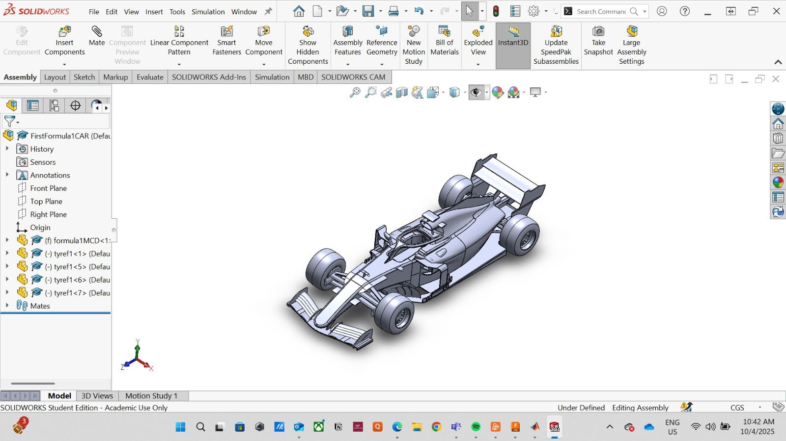
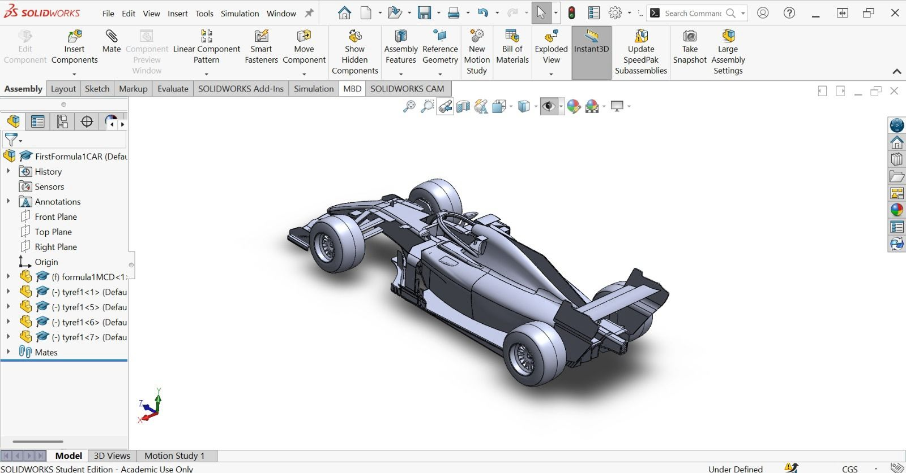
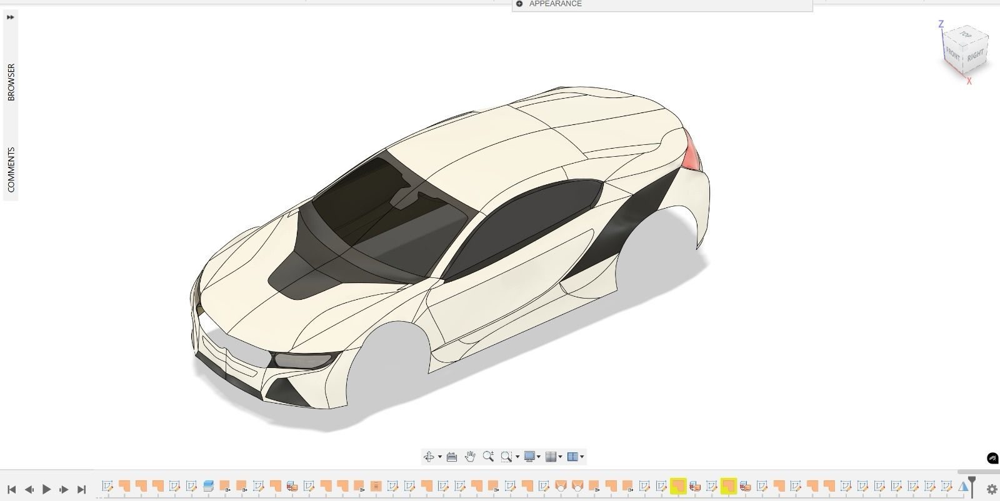
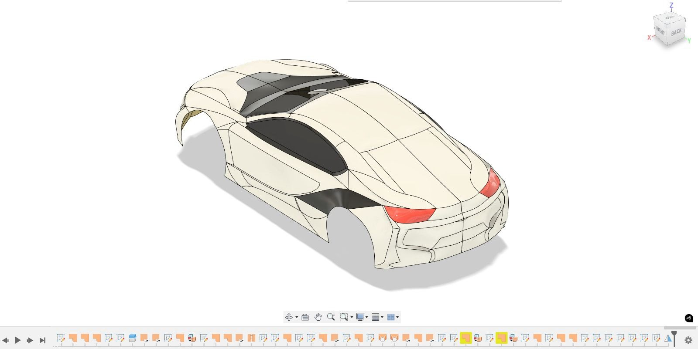
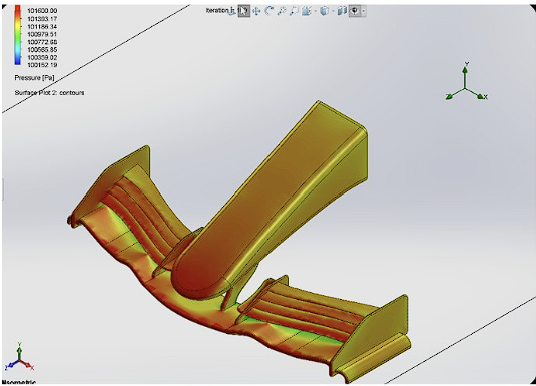
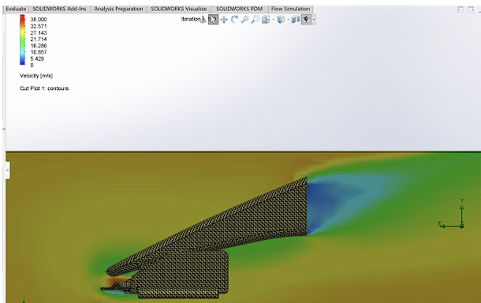

Formula 1 Car Surface Modeling
Tools: SolidWorks, Autodesk Fusion 360
- Independently modeled a complete F1 car from scratch, focusing on aerodynamic body surfaces and rear wing geometry.
- Designed high fidelity surface models of a Formula 1 car, prioritizing aerodynamic continuity and packaging constraints.


BMW i8 Core Body Frame Design
Tools: SolidWorks, Autodesk Fusion 360
- Built BMW i8 core body frame using surface modeling, prioritizing surface continuity and complex automotive curves.
- Focused on high-fidelity body structure modeling to support design intent, manufacturability, and visual fidelity.


Pre 2022 F1 Front Wing External CFD Study
Tools: Ansys Fluent, SolidWorks Flow Simulation
- Ran 3D external CFD at 30 m/s (low speed cornering) and 100 m/s (terminal velocity).
- Achieved a 12 percent reduction in drag coefficient and 18 percent increase in downforce to inform front wing geometry decisions.
- Validated quadratic dynamic pressure scaling and documented mesh limitations, proposing prism layer iterations targeting a y+ value of ~ 1.

